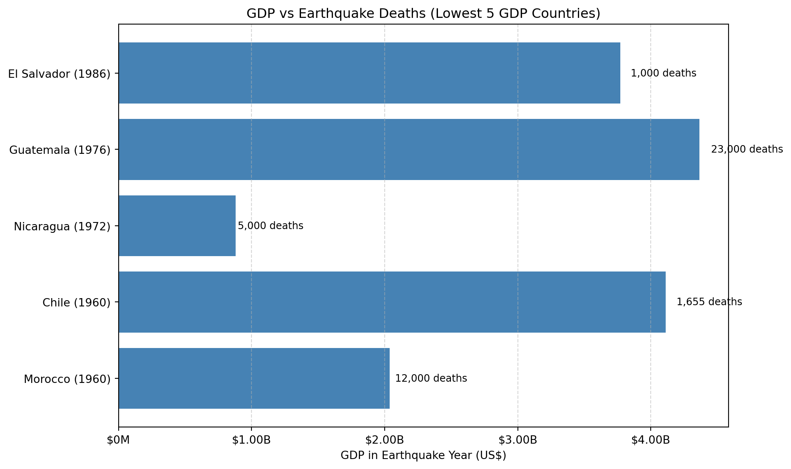
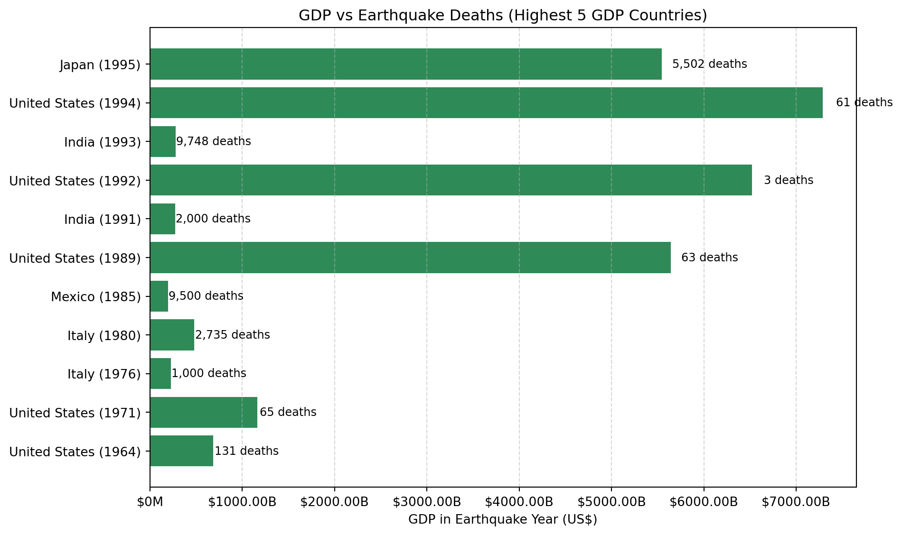

The chart illustrates the log-scaled GDP trends of the five countries that experienced the most earthquakes in the 20th century: Turkey, Iran, China, the United States, and Japan
For Turkey, the GDP trend from 1960 to the early 1990s showed modest growth. However, in the late 1990s, a noticeable flattening is observed around 1999, coinciding with the devastating İzmit earthquake
In Iran, the GDP trajectory is more volatile than other countries. Significant earthquakes occurred in the 1970s, 1990, and early 2000s. While some dips in GDP growth align with earthquake years (e.g., 1990), it is difficult to isolate earthquakes as the primary cause, given overlapping political and economic events such as sanctions and oil market fluctuations.
China displays a strong and consistent upward trend in GDP across the decades, including during years with major earthquakes, such as the 1976 Tangshan earthquake and the 2008 Sichuan earthquake. There is no clear downturn in GDP growth following these events, suggesting a high level of economic resilience and capacity for rapid recovery
The United States also maintains a stable and steadily rising GDP trend, with earthquakes such as the 1989 Loma Prieta and 1994 Northridge events causing no visible deviation in the growth trajectory. This may reflect the country’s diversified economy and robust disaster response infrastructure.
Japan, on the other hand, shows a few distinct deviations that align with major seismic events. Notably, in 1995, GDP growth flattens in the aftermath of the Great Hanshin (Kobe) earthquake. Similarly, a small disruption is visible around 2011, the year of the Tohoku earthquake and tsunami
Overall, while some short-term economic disruptions are observable—especially in Turkey and Japan—most countries exhibit resilient long-term GDP growth following earthquakes. The use of a logarithmic scale helps reveal relative changes across countries with vastly different GDP sizes, and makes subtle year-over-year variations more visible. This suggests that while earthquakes can impose temporary economic costs, macroeconomic recovery is common, particularly in nations with stronger infrastructure and economic foundations.
Question 2
Is there a relationship between the number of deaths from earthquakes and a country’s GDP (do countries with lower GDPs have higher death rates due to poor infrastructure and poor disaster response?)
Find the countries with low GDP and well-documented earthquake data
Code
import pandas as pddf_gdp = pd.read_csv("cleaned_data/Global_GDP_cleaned.csv")latest_year = df_gdp["Year"].max()latest_gdp = df_gdp[df_gdp["Year"] == latest_year]lowest_gdp_countries = latest_gdp.dropna(subset=["GDP"]).sort_values(by="GDP").head(5)print(f"Lowest 5 GDP Countries in {latest_year}:")print(lowest_gdp_countries[["Country Name", "Country Code", "Year", "GDP"]])
Lowest 5 GDP Countries in 2023:
Country Name Country Code Year GDP
14290 Tuvalu TUV 2023 6.228031e+07
14230 Nauru NRU 2023 1.541703e+08
14208 Marshall Islands MHL 2023 2.593000e+08
14180 Kiribati KIR 2023 2.792089e+08
14239 Palau PLW 2023 2.818491e+08
Find out in which year the 5 countries with the lowest GDP had major earthquakes and death tolls
5 earthquake countries with lower GDP：
region year GDP richter deaths
1 Chile 1960 4.110000e+09 9.5 1655.0
19 El Salvador 1986 3.771663e+09 5.5 1000.0
12 Guatemala 1976 4.365300e+09 7.5 23000.0
0 Morocco 1960 2.037155e+09 5.7 12000.0
8 Nicaragua 1972 8.785700e+08 6.2 5000.0
Code
import pandas as pdimport matplotlib.pyplot as pltimport matplotlib.ticker as tickerdf_gdp = pd.read_csv("cleaned_data/Global_GDP_cleaned.csv")df_eq = pd.read_csv("cleaned_data/Global_earthquake_20th_century_cleaned.csv")eq_years_full = df_eq[["region", "year", "richter", "deaths"]].dropna()gdp_eq_full = pd.merge( eq_years_full, df_gdp, left_on=["region", "year"], right_on=["Country Name", "Year"], how="inner")gdp_eq_complete = gdp_eq_full[["region", "year", "GDP", "richter", "deaths"]].dropna()avg_gdp_complete = ( gdp_eq_complete.groupby("region")["GDP"] .mean() .reset_index() .sort_values(by="GDP"))low_gdp_complete_countries = avg_gdp_complete.head(5)["region"].tolist()gdp_eq_complete_low = gdp_eq_complete[ gdp_eq_complete["region"].isin(low_gdp_complete_countries)]labels = gdp_eq_complete_low["region"] +" ("+ gdp_eq_complete_low["year"].astype(str) +")"gdp_values = gdp_eq_complete_low["GDP"]deaths = gdp_eq_complete_low["deaths"]plt.figure(figsize=(10, 6))bars = plt.barh(labels, gdp_values, color="steelblue")formatter = ticker.FuncFormatter(lambda x, pos: f"${x/1e9:.2f}B"if x >=1e9elsef"${x/1e6:.0f}M")plt.gca().xaxis.set_major_formatter(formatter)for bar, death inzip(bars, deaths): width = bar.get_width() plt.text(width + width *0.02, bar.get_y() + bar.get_height() /2,f"{int(death):,} deaths", va="center", fontsize=9)plt.xlabel("GDP in Earthquake Year (US$)")plt.title("GDP vs Earthquake Deaths (Lowest 5 GDP Countries)")plt.grid(axis="x", linestyle="--", alpha=0.5)plt.tight_layout()plt.show()

Horizontal bars of GDP for the top 5 countries with the highest GDP in the year of the earthquake, by peer comparison
Code
import pandas as pdimport matplotlib.pyplot as pltimport matplotlib.ticker as tickerdf_gdp = pd.read_csv("cleaned_data/Global_GDP_cleaned.csv")df_eq = pd.read_csv("cleaned_data/Global_earthquake_20th_century_cleaned.csv")eq_years_full = df_eq[["region", "year", "richter", "deaths"]].dropna()gdp_eq_full = pd.merge( eq_years_full, df_gdp, left_on=["region", "year"], right_on=["Country Name", "Year"], how="inner")gdp_eq_complete = gdp_eq_full[["region", "year", "GDP", "richter", "deaths"]].dropna()avg_gdp_complete_high = ( gdp_eq_complete.groupby("region")["GDP"] .mean() .reset_index() .sort_values(by="GDP", ascending=False))high_gdp_countries = avg_gdp_complete_high.head(5)["region"].tolist()gdp_eq_complete_high = gdp_eq_complete[ gdp_eq_complete["region"].isin(high_gdp_countries)]labels_high = gdp_eq_complete_high["region"] +" ("+ gdp_eq_complete_high["year"].astype(str) +")"gdp_values_high = gdp_eq_complete_high["GDP"]deaths_high = gdp_eq_complete_high["deaths"]plt.figure(figsize=(10, 6))bars = plt.barh(labels_high, gdp_values_high, color="seagreen")formatter = ticker.FuncFormatter(lambda x, pos: f"${x/1e9:.2f}B"if x >=1e9elsef"${x/1e6:.0f}M")plt.gca().xaxis.set_major_formatter(formatter)for bar, death inzip(bars, deaths_high): width = bar.get_width() plt.text(width + width *0.02, bar.get_y() + bar.get_height() /2,f"{int(death):,} deaths", va="center", fontsize=9)plt.xlabel("GDP in Earthquake Year (US$)")plt.title("GDP vs Earthquake Deaths (Highest 5 GDP Countries)")plt.grid(axis="x", linestyle="--", alpha=0.5)plt.tight_layout()plt.show()

Low-GDP countries, such as Guatemala (1976) and Morocco (1960), experienced devastating death tolls of 23,000 and 12,000 respectively, despite relatively moderate earthquake magnitudes. These countries had earthquake-year GDPs below $5 billion, and often lacked robust infrastructure or effective disaster response systems.
In contrast, high GDP countries like Japan and the United States show significantly lower death counts, even when hit by powerful earthquakes. For instance, Japan (1995), despite facing a magnitude 7.2 quake, reported 6,434 deaths which is a high number, but relatively modest given the country’s population size and economic scale. The USA (1994) reported only 57 deaths from a magnitude 6.9 quake, backed by over $7 trillion in GDP at the time.
This contrast underscores the relationship between economic capacity and disaster resilience: higher GDP nations tend to have stronger building codes, early warning systems, and emergency response capabilities, all of which contribute to lower mortality rates.
Overall, this visual and numeric comparison supports the hypothesis that earthquakes are far deadlier in low GDP countries, not necessarily due to the strength of the quake itself, but because of systemic vulnerabilities in infrastructure, preparedness, and emergency response.